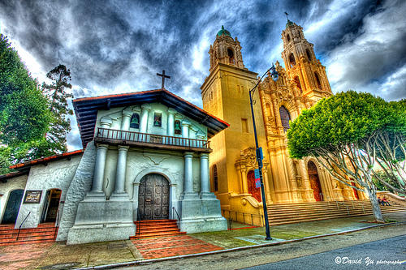
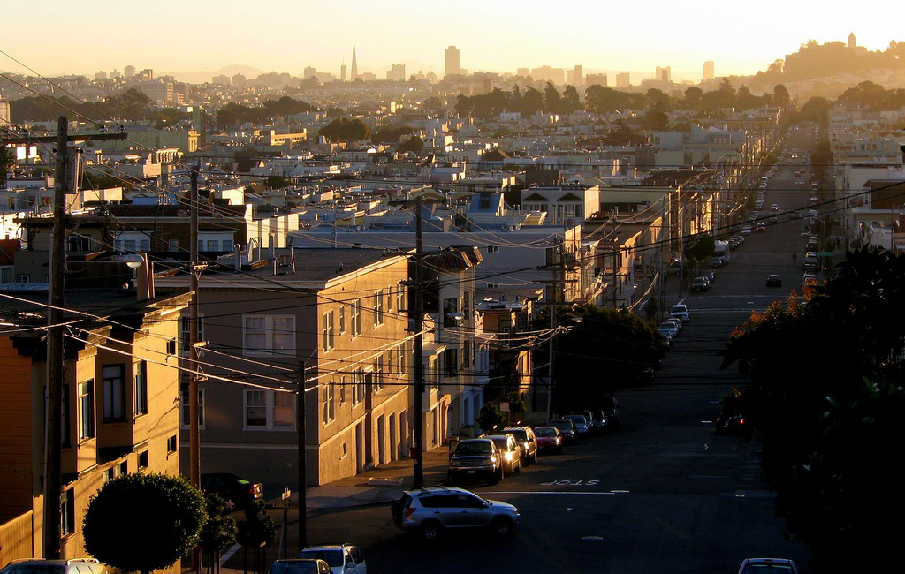

Hoods!
San Francisco Edition

Nob HillFanciest part of town, best views of the city |

ChinatownCheap, crowded, killer Chinese food |
North BeachBest pizza & italian food, strip clubs, and clam chowder |
The MarinaPosh restaurants & clubs, finance bros, and boats |
TenderloinBums, crack and more bums |

Mission DistrictHipsters, trendy shops, top Mexican food, and gentrification |

The HaightHippy haven of yesteryear, funky shops and organic eats |

SOMANear downtown, brand new condos, and more gentrification |

Sunset/RichmondPeaceful, foggy, next to Golden Gate Park |